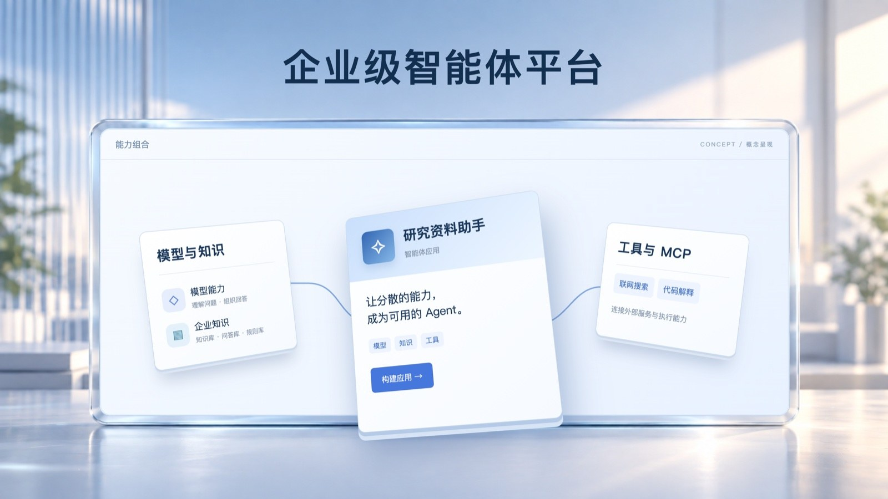

Enterprise AI
平台唯一交互设计师 · 已在组织内部上线
企业级智能体平台
Web
把分散的能力，组织成一条可构建的 Agent 路径。
覆盖模型、应用、MCP、工具与资料库的平台，为内部员工提供从创建、调试到发布与治理的统一入口。
- 我的角色
- 平台唯一交互设计师 · 产品方向由产品团队确定，我负责全平台交互与高保真交付
- 协作方式
- 产品、设计与研发协作
- 覆盖范围
- 模型、应用、MCP、工具、资料库五个模块

01 / CONTEXT
不仅要能搭起来，还要能找到、调试和维护。
业务同事有知识和场景，但技术能力散落在不同地方。平台需要让创建 Agent 的路径可以理解，也让管理员看得到运行状态。
我通过对同类平台的研究，梳理应用、模型、工具与资料之间的关系，再把产品规划落到完整的流程与状态。
01创建
02调试
03发布
04治理与监控
02 / CREATE
从现成应用开始，也可以自己构建。
应用广场按业务场景组织现成应用；自建时区分两种路径，并在创建入口说明差别：
路径 A智能体应用由模型自主决策调用能力，适合开放式问答与助理类场景
路径 B工作流应用明确编排每一步，适合流程固定、需要稳定输出的场景
03 / BUILD & DEBUG
把流程摆出来，才能看得懂、调得动。
工作流把模型、检索、条件判断、MCP 与工具组织为可连接的节点。用户在同一处理解步骤、测试流程、管理版本并提交发布。
节点模型
节点知识检索
节点条件判断
节点MCP / 工具
输出测试后提交发布
系统 / 模型处理由人确认或决定
04 / DELIVERY
负责一个平台，而不只是一个画布。
我覆盖了模型、应用、MCP、工具、资料库五个模块的交互与高保真交付，让能力接入、知识配置和运行监控形成一致的体验。
平台体验需要同时看见创作者和管理者，让“能创建”和“能持续使用”处在同一套系统里。